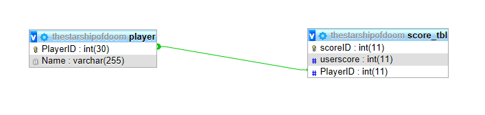
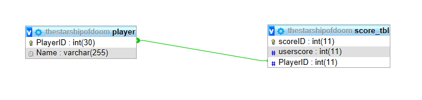

Key Features

Basic Features
The WASD keys are used to move the player around. The game uses the standard phaser movement style of adding velocity to move in a certain direction. In terms of collision, the velocity of the player's sprite is not affected by them. The player can move anywhere except outside the window. Collision only occurs between bullets and entities in the world.
Database
 To allow for the game scores to be saved after a player completes the game a database was needed to store the information. For this type of game
there is no need for an overly complicated database nor for overly complicated functionality to write to the database via the game. The implementation of the database was achieved by using MySQL via XAMPP
which is an apache control panel that allows for apache and MySQL servers to be run on the correct ports. The control panel also has in-built functionality to create and manage a database.
Firstly, the database was designed using an Entity Relationship(ER) diagram to lay out which tables would be needed, the data within those tables and what relationships are between the tables. The ER diagram can be found below:

From creating the ER diagram, the overall design of the database was designed with a clear link between the score table and the player table. For each player saved within the database they can have one to many scores saved in the score table linked via their player ID. By designing it this way it negated the need of repeated data throughout the same table and allows for a high-score table to be implemented in the future.
After creating the ER diagram, the database can be implemented via SQL statements to create each table and the foreign key constraints between the tables. Create statements used where:
CREATE TABLE player (PlayerID int(30) NOT NULL AUTO_INCREMENT, Name varchar(255) NOT NULL, PRIMARY KEY (PlayerID));
CREATE TABLE score_tbl (scoreID int(11) NOT NULL AUTO_INCREMENT, userscore int(11) NOT NULL, PlayerID int(11) NOT NULL, PRIMARY KEY (scoreID), FOREIGN KEY (PlayerID) REFERENCES player(PlayerID));
Both statements created the two tables outlined in the ER diagram including making both ID columns the primary keys and auto incrementing them. Auto incrementing allows the database to automatically allocate a value to the ID column based on the value of the previous row. For example, if the previous row had an ID of 1 the next row would be 2. Each datatype was marked to now allow nulls due to each bit of data being considered as needed to keep the integrity of the database. Finally, the foreign key constraint was added to the score table to ensure it was linked to the player table.
After the database was created in MySQL the game could now be coded to use the database to store the game score values using PHP code. PHP is known to be a reliable way to securely pass data from a website to a database.
To allow for the game scores to be saved after a player completes the game a database was needed to store the information. For this type of game
there is no need for an overly complicated database nor for overly complicated functionality to write to the database via the game. The implementation of the database was achieved by using MySQL via XAMPP
which is an apache control panel that allows for apache and MySQL servers to be run on the correct ports. The control panel also has in-built functionality to create and manage a database.
Firstly, the database was designed using an Entity Relationship(ER) diagram to lay out which tables would be needed, the data within those tables and what relationships are between the tables. The ER diagram can be found below:

From creating the ER diagram, the overall design of the database was designed with a clear link between the score table and the player table. For each player saved within the database they can have one to many scores saved in the score table linked via their player ID. By designing it this way it negated the need of repeated data throughout the same table and allows for a high-score table to be implemented in the future.
After creating the ER diagram, the database can be implemented via SQL statements to create each table and the foreign key constraints between the tables. Create statements used where:
CREATE TABLE player (PlayerID int(30) NOT NULL AUTO_INCREMENT, Name varchar(255) NOT NULL, PRIMARY KEY (PlayerID));
CREATE TABLE score_tbl (scoreID int(11) NOT NULL AUTO_INCREMENT, userscore int(11) NOT NULL, PlayerID int(11) NOT NULL, PRIMARY KEY (scoreID), FOREIGN KEY (PlayerID) REFERENCES player(PlayerID));
Both statements created the two tables outlined in the ER diagram including making both ID columns the primary keys and auto incrementing them. Auto incrementing allows the database to automatically allocate a value to the ID column based on the value of the previous row. For example, if the previous row had an ID of 1 the next row would be 2. Each datatype was marked to now allow nulls due to each bit of data being considered as needed to keep the integrity of the database. Finally, the foreign key constraint was added to the score table to ensure it was linked to the player table.
After the database was created in MySQL the game could now be coded to use the database to store the game score values using PHP code. PHP is known to be a reliable way to securely pass data from a website to a database.
Multiplayer
‘Node.js’, a run-time environment that executes JavaScript code server-side, was used to handle multiplayer in the game. Separate versions of the game have been made since there was not enough time to merge functionality of ‘node.js’ and ‘xampp’. The whole structure of the game had to be changed to accommodate for multiplayer; hence, it is not fully playable. Although, p2p features like synchronised movement works. Collision detection works in terms of bullets from one player hitting the other player. The largest drawback is that one player’s shooting is detected in the other browser, but until the other browser is active, the bullets do not move. This may be due to the physics system of the other game going inactive while not being in the browser being used.

In fact, most of the problems are related to this. Getting p2p features working was not as difficult as getting artificial intelligence to work through the server. Although instructions can be passed around, the enemies still stay independent to each game. Regardless of all this, the player can still go through the game; but it will not be synchronous to the game played by player 2.
State Pattern
 The player can go through the above mentioned play states.
The player can go through the above mentioned play states.
Decorator Pattern
The game also has a decorator pattern of sorts. The attributes class holds the variables for each entity. It calculates everything from bullet damage to movement speed. All this is affected by upgrades so a simple version of the decorator pattern is present since values are amended based on run-time events. An example is that choosing spread shot decreases bullet damage and rate of fire.
Modularity
The game has been split up into an object-oriented fashion. There are controllers for everything so that a lot of code is not repeated and is quite organised. There are classes for the players, the enemies, and attributes they inherit. Each have getter and setter methods so that encapsulation is achieved whenever possible. This aided in the implementation of the levels created as the structure of the game now allows for the rapid creation of levels. The structure of having a wave of enemies, then a boss, can be used repeatadly. This would be useful if the game will ever need to be extended. This includes enemy types as well since all it takes is to create a new "enemy" and pass in values.
This sense of structure also extends to how the states are dealt with. Other than just phaser states, the game is also structured to go between game mode and a intermediary section. This controls the variables going into the next level and simply feeds this information into making the next level. All this can be seen in the class diagram.